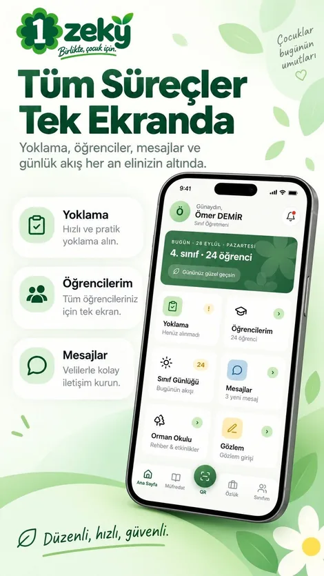
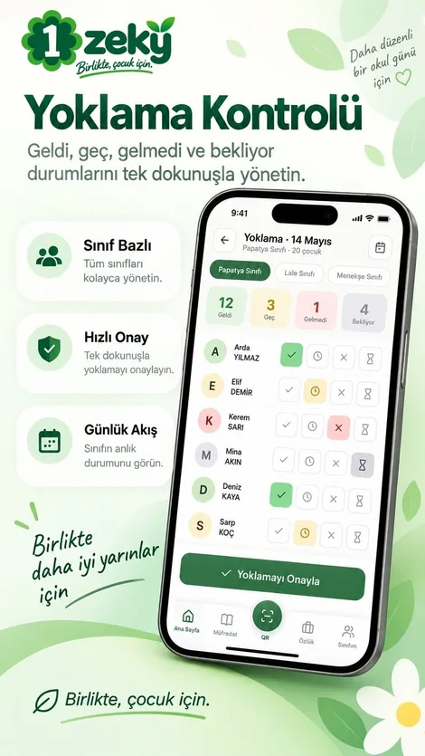
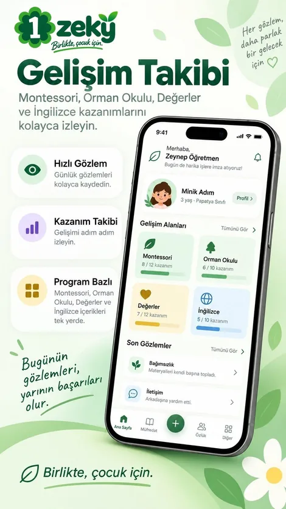
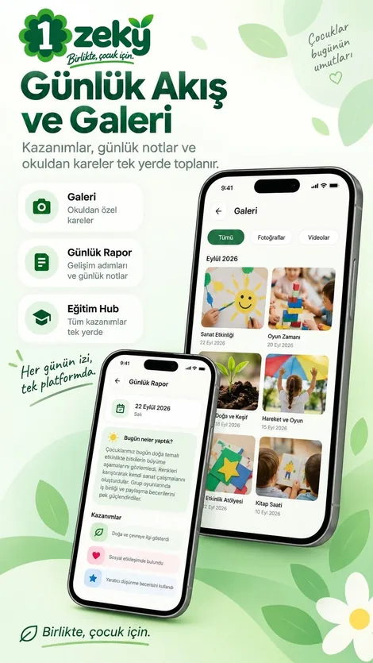
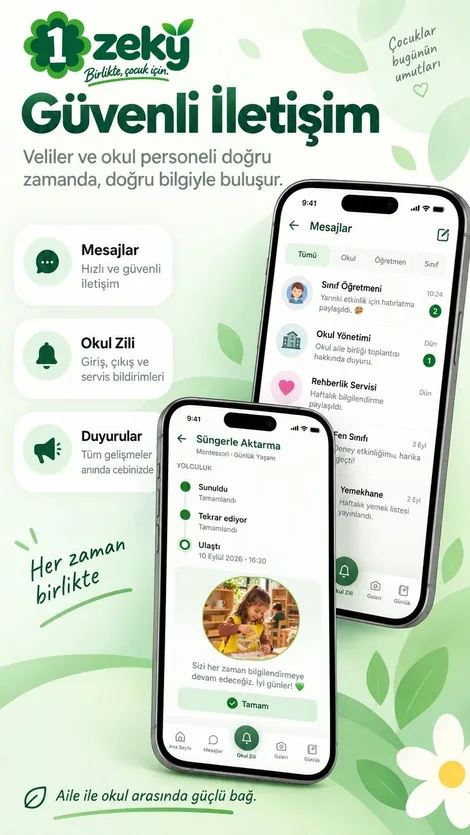
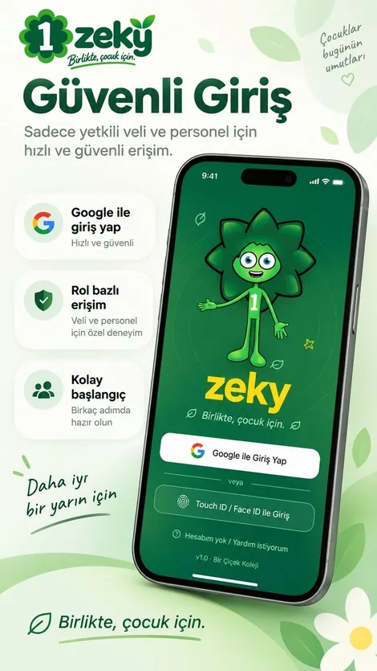
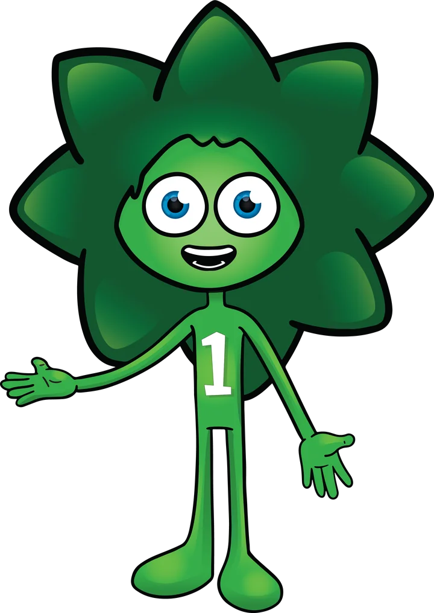

Kapalı teste katılın
ZEKY şu an Google Play'de kapalı testte. E-posta adresi test listesine eklenmiş veliler ve personel uygulamayı buradan indirebilir.
Listede değilseniz Google Play "uygulama bulunamadı" der. Eklenmek için okulunuza ya da info@zeky.com.tr adresine yazın.
- Doğru Google hesabını açınTelefonunuzdaki Google Play'de, okula bildirdiğiniz Gmail adresiyle oturum açık olmalı.
- Teste katılınAçılan sayfada "Test kullanıcısı ol" düğmesine basın.Teste katıl
- Uygulamayı indirinGoogle Play'de ZEKY'yi yükleyin. Katıldıktan sonra görünmesi birkaç dakika sürebilir.Google Play'de aç
Uygulamadan ekranlar
Yoklamadan galeriye, ZEKY'nin her gün kullanılan ekranları.






Ekranlardaki isimler ve fotoğraflar örnektir.
Bir okul günü, ZEKY'de
ZEKY'nin ekranları bir anaokulunun gerçek gününden çıktı. Sabahtan akşama kim ne yapar, kime haber gider:
-
Okula bırakma
Veli çocuğu bıraktığını uygulamadan bildirir, danışma girişi onaylar. Onay velinin telefonuna bildirim olarak düşer.
VeliDanışma
-
Yoklama
Öğretmen yoklamayı onaylar. Gelmeyen çocuğun velisine haber gider; veli bildirime dokunup doğrudan izin bildirebilir.
ÖğretmenVeli
-
Gözlem, fotoğraf, kazanım
Öğretmen gözlem yazar, kazanımları işaretler, fotoğraf ekler. Fotoğraflar yönetici onayından geçer; karede fotoğraf izni olmayan bir çocuk varsa yayınlanmaz.
ÖğretmenYönetimVeli
-
Randevu ve görüşme
Veli öğretmen, rehberlik ya da yönetimle randevu alır. Görüşmeden sonra not yazılır; gizli notları yalnız yönetim ve rehberlik görür.
VeliÖğretmenRehberlik
-
Çocuk teslimi
Veli yola çıktığını ve kapıda olduğunu bildirir; sınıf öğretmenine haber gider. Çocuk hazırlanıp kapıya yönlendirilir, teslim edildiğinde veliye bildirim gelir. Çocuğu kimin alabileceğini veli önceden tanımlar.
VeliÖğretmenDanışma
Herkes kendi ekranında
Aynı uygulama; veli, öğretmen ve yönetim yalnız kendi işine ait ekranları görür.
Veli
Çocuğunun gününü, gelişimini ve okulla yazışmalarını tek yerden izler.
- Günlük akış, duyurular ve bildirimler
- Öğretmenle uygulama içi mesajlaşma
- Fotoğraf ve video galerisi
- İzin bildirimi ve randevu
- Çocuk teslimi ve yetkili kişiler
- Eğitim ve kazanım takibi, aylık özet
- Ödeme planı ve ödeme bildirimi
- Yemek menüsü, uyku, etkinlikler
Öğretmen
Sınıfın gününü telefondan yürütür; kâğıt formlar ve dağınık mesajlar yerine tek akış.
- Yoklama ve devamsızlık bildirimi
- Hızlı gözlem ve kazanım işaretleme
- Fotoğraf ve video yükleme, onaylı yayın
- Günlük, dönemsel ve gelişim raporları
- Veli mesajları ve görüşme notları
- Çıkış listesi ve kapıdan gelen mesajlar
- QR ile işe giriş ve izin talebi
Yönetim
Okulun idari ve mali işlerini, onay bekleyen her şeyle birlikte görür.
- Onay merkezi: izin, ödeme, fotoğraf ve diğer talepler bir arada
- Personel: konum doğrulamalı QR giriş-çıkış, izin, puantaj, bordro
- Finans: ödeme planları, tahsilat, gider ve fatura
- Duyuru, anket ve veli memnuniyeti raporu
- MEB denetimine hazırlık listesi
- Danışma: giriş-çıkış ve ziyaretçi randevuları
Rehberlik (PDR) birimi için ayrı bir alan vardır: gözlem, test ve ilerleme kayıtları burada tutulur ve öğretmen ekranlarında görünmez.

Bir okulun içinde yazıldı
ZEKY, İstanbul Tuzla'daki Bir Çiçek Koleji Anaokulu'nda, okulun kendi ihtiyaçları için geliştirildi ve her gün orada kullanılıyor. Montessori ve orman okulu programı uygulayan bir okulun iş akışları, sabah girişinden çocuk teslimine kadar uygulamanın temelini oluşturuyor.
Müfredat okula göre şekillenir. Her modül ayrı ayrı açılıp kapatılabilir:
Çocuğa ait bilgi, yalnız görmesi gerekende
ZEKY'de okul çocuklarla ilgili veri tutar; bu yüzden erişim kuralları uygulamanın ilk tasarım kararıdır.
- Rol bazlı erişimHer kullanıcı yalnız kendi rolünün ekranlarını görür; veli yalnız kendi çocuğunun kayıtlarını görür.
- Rehberlik kayıtları ayrıPDR gözlem ve test kayıtları öğretmenlere kapalıdır.
- İzinli fotoğraf paylaşımıFotoğraflar yönetici onayından geçer; fotoğraf izni olmayan çocuk yayınlanmaz.
- İletişim uygulama içindeVelilere personelin telefon ve e-posta adresi gösterilmez; yazışma uygulama içi mesajla yapılır.
- Hesap silme uygulamanın içindeKullanıcı hesabının ve ilişkili verilerin silinmesini uygulamadan talep edebilir.
- Reklam ve veri satışı yokZEKY reklam ağı içermez. Altyapı Google Firebase üzerinde çalışır; yurt dışına aktarım için açık rıza alınır.